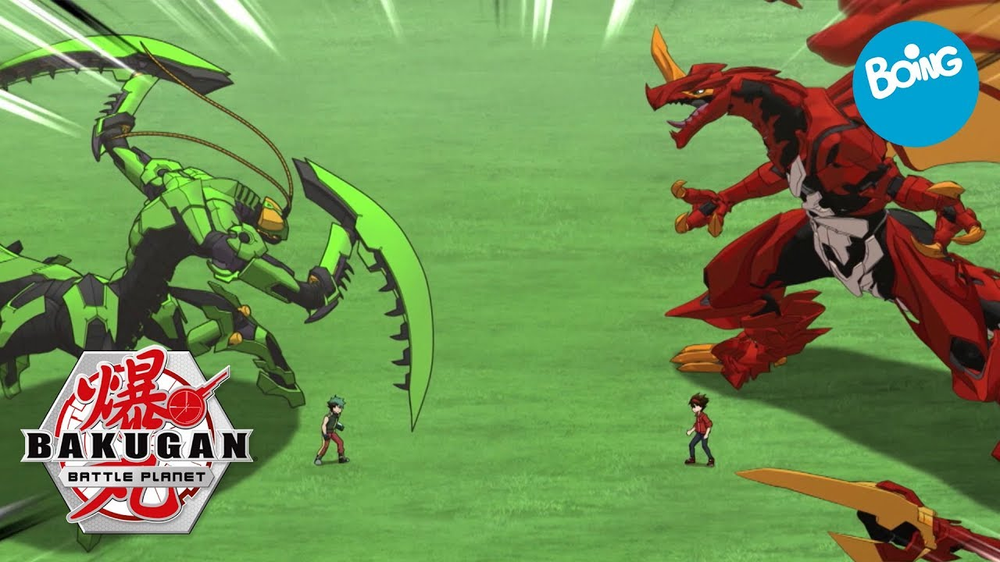
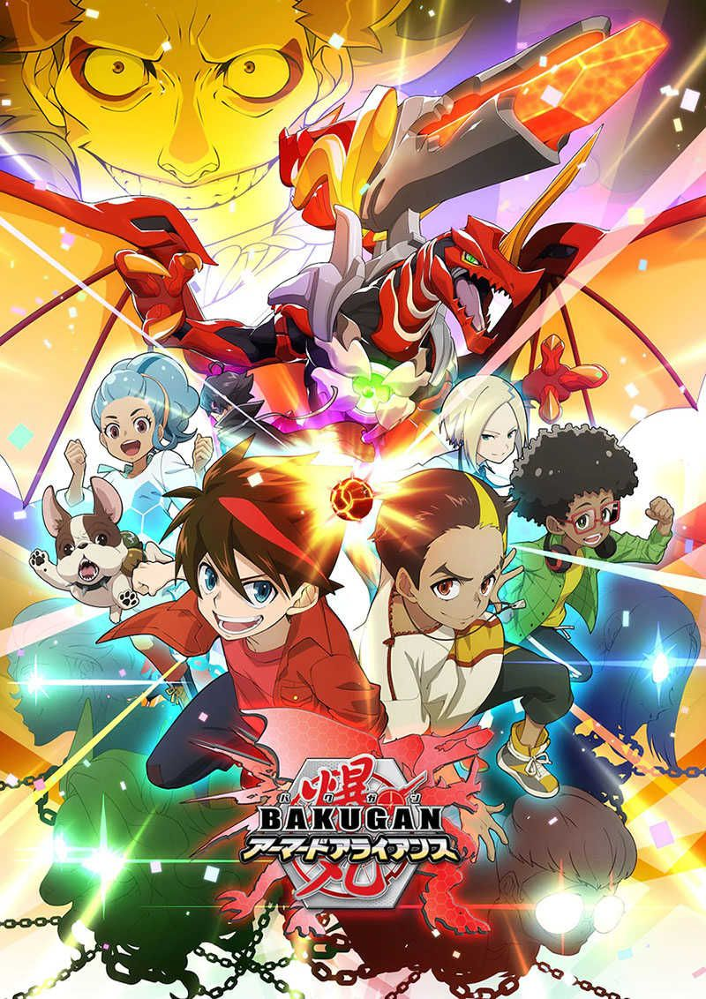

La vida de Dan Kuso cambió un día cuando unas cartas comenzaron a llover desde los cielos, con criaturas dentro llamadas "Bakugan". Dan, Junto a sus amigos: Runo, Marucho, Julie, Shun y Alice, accidentalmente se ven involucrados en una pelea contra múltiples villanos que pretenden conquistar Vestroia (la dimensión de los Bakugan), el planeta Tierra y todo planeta en el universo que haya recibido a los Bakugan. El anime fue producido por TMS Entertainment bajo la dirección de Mitsuo Hashimoto. Se estrenó el 5 de abril de 2007 en TV Tokyo y fue retransmitida 6 días después en BS Japan. Terminó sus transmisiones el 20 de marzo de 2008. Nelvana Limited dobló la versión inglesa y presentó la serie en el canal canadiense Teletoon de julio de 2007 al 2008. Posteriormente se emitió en Estados Unidos en Cartoon Network, del 24 de febrero de 2008 al 28 de febrero de 2009. En Hispanoamérica, la serie debutó el 2 de marzo de 2009 y finalizó el 24 de julio del mismo año.
Cuatro Temas musicales fueron usados para la serie; dos aperturas de Psychic Lover y dos cierres. La apertura para los primeros 30 capítulos es "Number One Battle Brawlers" (ナンバーワン·バトルブローラーズ Nanbā Wan Batoru Burōrāzu?); y para los últimos 21 Capítulos es "Bucchigiri Infinte Generation" (ブッちぎり∞ジェネレーション Bucchigiri Infinitto Jenerēshon?). El cierre para los primeros 26 capítulos es "Air Drive" de Elephant Girl; y para los últimos 25 episodios es "Hello" (ハロー Harō?) de Za Bon.1
El doblaje de la serie para Hispanoamérica se realizó en los estudios de SDI Media de México de S. de R.L. de C.V. bajo la dirección de Raúl Estrada y la traducción de Julio César Alcántara.
En España fue emitido por primera vez en Cartoon Network y después fue emitido en Telecinco y en Boing.
En marzo de 2010, las compañías de entretenimiento TMS y Nelvana anunciaron la continuación de la serie, Bakugan Battle Brawlers: New Vestroia, que consta de 52 episodios. Bakugan Battle Brawlers: New Vestroia gira en torno a Dan y Marucho, que se reencuentran con su viejo amigo Shun en la recién restaurada Vestroia, aliándose con tres nuevos personajes: Baron, Ace y Mira, para luchar contra la organización Vexos.La serie comenzó a transmitirse en Canadá el 12 de abril de 2009 en Teletoon, terminando el 9 de mayo de 2010 y luego en Estados Unidos, en Cartoon Network, del 9 de mayo de 2009 al 22 de mayo de 2010. Debido a la calificación en Canadá, Teletoon pidió una ampliación de la historia de Nueva Vestroia, que constó de 26 episodios. Dado que los episodios se siguen haciendo, Teletoon tuvo que volver a las reposiciones de los últimos cuatro episodios, pero Cartoon Network fue capaz de estrenar los episodios 27-29 33-35 y 43 un día antes que Teletoon. En Japón se estrenó el 2 de marzo de 2010, finalizando el 5 de marzo de 2011. En Hispanoamérica se transmitió entre el 7 de marzo de 2010 y el 2 de marzo de 2011 (en esta región los capítulos 5-21 y 52 se estrenaron antes que en Japón).
Tres temas musicales fueron usados para la serie; una apertura y dos cierres. La apertura es "Cho! Saikyo! Warriors!" (バトルブローラーズ ニューヴェストロイア?) de Psychic Lover. El cierre para los primeros 13 capítulos es "Bang! Bang! Bakugan" de Yoshifumi Ushima y para los últimos episodios es "Communication Breakdown" de Crush Tears.
En España fue emitido por primera vez en Cartoon Network y después fue emitido en Telecinco y en Boing.

Bakugan Mechtanium Surge es la cuarta temporada de Bakugan, la cual se estrenó el 13 de febrero de 2011 en Canadá y el 5 de marzo de 2011 en Estados Unidos. La serie gira en torno a los mismos personajes, quienes tendrán que salvar al mundo una vez más con el nuevo y mejorado "Mega Interespacio Bakugan", asociándose con Rafe, el peleador Haos de Neathia, Paige, la guerrera Subterra de Gundalia y Spectra Phantom, que vuelve en esta temporada con Infinity Helios, su forma evolucionada, con la novedad de tener el atributo Darkus y con nuevos dispositivos de batalla inventados por el mismo Spectra. El sexteto deberá hacerle frente al equipo Anubias y el equipo Sellon, así como a Mag Mel, una nueva amenaza que pretende destruir todo lo que se le enfrente. Después de derrotar a Mag Mel, los bakugans de Nueva Vestroia vivieron en la tierra. Luego de un descanso aparecieron nuevas amenazas, mechtogans de doom dimensión, incluyendo nonets bakugans y un nuevo enemigo, Wiseman. Aparece aquí el bakugan descendiente del Code Eve Genesis Dragonoid y nuevos mechtogans y mechtogans destroyer, como Mechtavius Destroyer y Dragonoid Destroyer. En Hispanoamérica se transmitió del 2 de abril de 2012 al 2 de julio de 2012, siendo la primera vez que esta región estrena una temporada antes que Japón, donde no se sabe si la estrenarán o no.
En España fue emitido en Boing.

Información de wikipedia